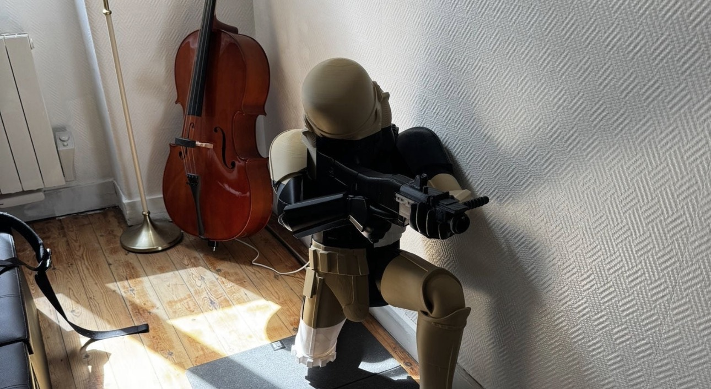
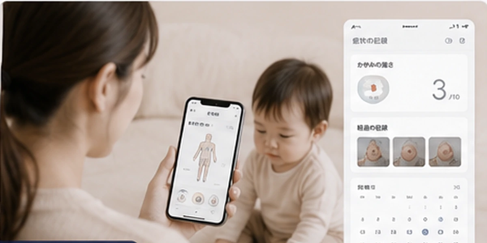
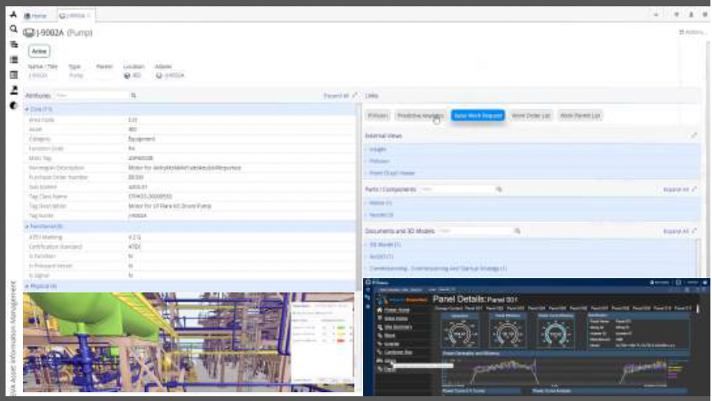
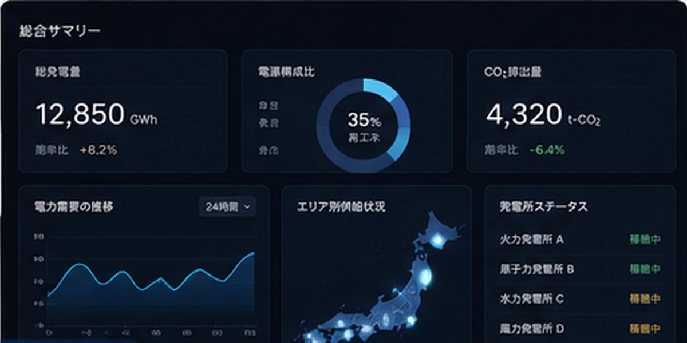
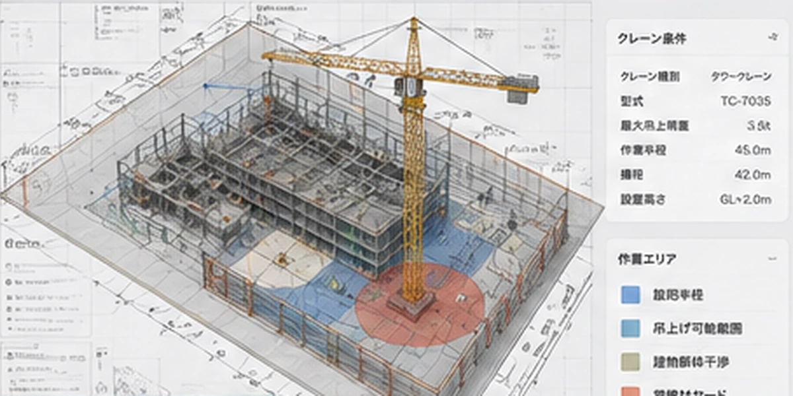
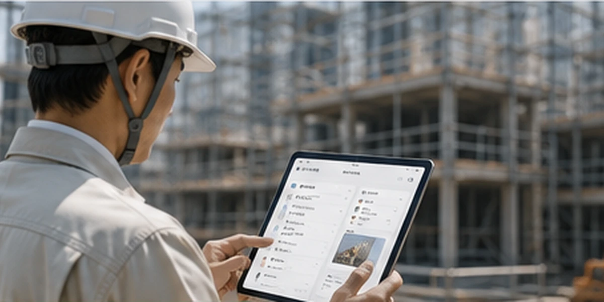

Digital Transformation Consultant
Consultante Senior en Transformation Digitale, IA & Stratégie Technologique — experte du pont Japon × France, j'accompagne les entreprises dans leurs projets de digitalisation et d'innovation.
Quelques repères, et les pratiques que je mène sur le long terme.
Concentration sous pression élevée
Depuis 30 ansEsprit d'équipe orienté performance et résultats collectifs
Depuis 30 ansRigueur et précision technique
Depuis 30 ansCréativité nourrie par des pratiques artistiques
Plus de 10 livres lus par mois
2 heures par jour avec mon chien — favorise la création rapide de liens sociaux dans de nouveaux environnements
Face au stress, je dialogue avec moi-même et explique les choses simplement à mon interlocuteur. Je détiens une certification privée de conseillère en psychologie (counseling).

Conception de mes propres modèles 3D, avec toutes sortes de matériaux, pour créer des objets qui enrichissent le quotidien — parfois juste pour le plaisir, comme ce Stormtrooper à haut-parleur intégré.
J'ai choisi INSEEC pour développer un parcours en management et transformation digitale dans un contexte international.
J'ai fait le choix de venir en France pour travailler à l'international. Le déclic est venu lorsque ma belle-mère est tombée gravement malade : c'est à ce moment-là que j'ai découvert les défis du système de santé français.
Malgré mon expérience, il est difficile de faire reconnaître mon profil sans références locales. Je souhaite valoriser mon expérience et construire ma crédibilité professionnelle en France.
Je suis une personne curieuse, avec de nombreux centres d'intérêt, mais je m'engage dans des activités que je pratique sur le long terme. Chacune d'elles m'a permis d'apprendre et de construire ma personnalité.
Je suis quelqu'un de sérieux, mais plutôt timide. Je pense toutefois que l'humour est essentiel.
Mon français n'est pas encore parfait, mais je vise le niveau C1 dans un an.
Le parcours académique qui accompagne cette nouvelle étape en France.
15 ans entre le Japon et la France, du conseil en architecture à la transformation digitale.
DX, développement, marketing & data. J'accompagne des clients allant des start-ups aux grands groupes sur l'ensemble du cycle de vie des projets : cadrage stratégique, développement d'applications, sélection de logiciels, analyse des réseaux sociaux et conception de systèmes.
Conception de modèles de monétisation (accès payant / licences) pour applications tous secteurs. Expertise en architecture logicielle et design de systèmes.
Logiciels couvrant l'ensemble du cycle industriel, de la conception à l'exploitation. Consultante spécialisée dans la gestion et l'interconnexion de systèmes et de documents, tous secteurs confondus — définition des règles de gestion des assets et conception d'architectures d'intégration entre systèmes.
Logiciels de conception et de construction, du grand public aux professionnels. Avant-vente, adaptation technique locale, conception de supports marketing et organisation d'événements professionnels.
Cabinet de conseil en stratégie. Accompagnement de la structuration organisationnelle lors de la création de nouveaux départements ; optimisation de processus BIM pour un projet d'envergure.
Entreprise de construction et d'immobilier, leader au Japon. Conseil IT auprès des équipes internes et des clients externes.
Service Proposition (appels d'offres) — rédaction des dossiers d'appels d'offres, vérification des documents transmis par chaque département, et pilotage transverse en tant que chef de projet en coordination avec les équipes commerciales, jusqu'à l'obtention de nouveaux marchés.
Plus de 50 entreprises accompagnées, tous secteurs confondus — voici six missions représentatives, du cadrage au résultat mesuré.





Une double culture conseil / technique, du cadrage stratégique à l'exécution.
Développement d'outils d'amélioration des processus basés sur l'IA et de solutions de visualisation des données.
Création de supports visuels et de vidéos à l'aide d'outils de design.
Accompagnement du déploiement des outils jusqu'à leur adoption : documentation, définition de KPI, ancrage du changement dans la culture d'entreprise.
Prise en charge naturelle des échanges en japonais lorsqu'ils sont nécessaires.
J'accompagne les entreprises dans leurs projets de digitalisation et d'innovation — avec l'ambition de construire, dès septembre 2026, une nouvelle étape de ma carrière en France.